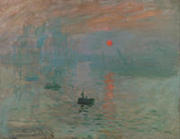

Timeline on Western Art Periods
| Time Periods |
Art Era/Movement |
Influences |
Pictures |
| 40,000-4,000 B.C. |
Prehistoric Art |
Lascaux Cave paintings, Paleolithic era, France. |
 |
| 30,000 B.C.- A.D. 400 |
Ancient Art |
Mesopotamia, Code of Hammurabi, 1754 B.C. |
|
| A.D. 500 - A.D. 1400 |
Medieval Art |
Giotto Di Bondone, Lamentation (The Mourning of Christ), 1288. |
 |
| 1400 - 1600 |
Renaissance |
Raphael, The School of Athens, 1511. |
|
| 1527 - 1580 |
Mannerism |
Giuseppe Arcimboldo. Portrait of Rudolf II 1590. |
 |
| 1600 - 1750 |
Baroque |
Caravaggio, The Calling of St. Matthew, 1600. |
 |
| 1699 - 1780 |
Rococo |
Jean-Honoré Fragonard, The Swing, 1767. London. |
 |
| 1750 - 1850 |
Neoclassicism |
Jacques-Louis David, Napolean Crossing the Alps, 1801. |
 |
| 1780 - 1850 |
Romanticism |
Henry Fuseli, The Nightmare, 1781. |
 |
| 1848-1900 |
Realism |
Jean-Françoise Millet, The Gleamers, 1857. |
|
| 1890 - 1910 |
Art Nouveau |
Alphonse Mucha, Princess Hyacinth, 1911. |
 |
| 1865 - 1885 |
Impressionism |
Claude Monet, Impression, Sunrise, 1899. |
 |
| 1885 - 1919 |
Post-Impressionism |
George Seurate, A Sunday Afternoon on the Island of La Grande Jatte, 1886. |
|
| 1900 - 1935 |
Fauvism |
Henri Matisse, The Goldfish, 1912. |
|
| 1905 - 1920 |
Expressionism |
Edvard Munch, The Scream, 1910. |
|
| 1907 - 1914 |
Cubism |
Pablo Picasso, Guernica, 1937. Paris/Madrid. |
 |
| 1917 - 1950 |
Surrealism |
Frida Kahlo, The Two Frida, 1939. Mexico City. |
|
| 1940s - 1950s |
Abstract Expressionism |
Jackson Pollock, Autumn Rhythmn (Number 30), 1950. New York City. |
|
| 1950s - 1960s |
Op Art |
Bridget Riley, Blaze, 1962. |
 |
| 1950s - 1960s |
Pop Art |
Andy Warhol, Marilyn Diptych, 1962. Tate Britain. |
 |
| 1960s |
Art Povera |
Mario Merz, Giap's Igloo, 1968. Rome. |
|
| 1960s - 1970s |
Minimalism |
Josef Albers, Homage to the Square, 1964. Tate Britain. |

|
| mid. 1960s - mid. 1970s |
Conceptual Art |
Marcel Duchamp, Fountain, 1917. |

|
| 1600 - 1750 |
Contemporary Art |
Yayoi Kusama, All the Eternal Love I Have for Pumpkins, 2016. London. |

|